| TAMAGOTCHI ORIGINAL (1996 - 1997) |
| GENERACIÓN |
PERSONAJE |
CONDICIONES DE OBTENCIÓN |
| NOMBRE |
ARTWORK |
SPRITE |
NOTAS |
GÉNERO |
| ORIGINAL |
Mametchi |
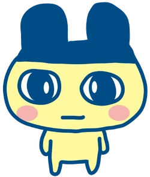 |
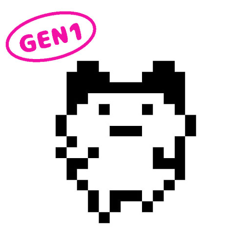 |
Personaje clásico y representativo del buen cuidado. |
Masculino |
Aparece si se mantiene la felicidad, hambre y disciplina altas. |
| Mimitchi |
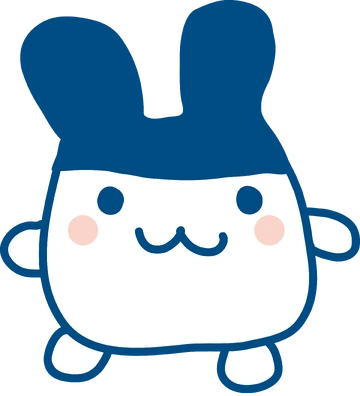 |
 |
Forma evolucionada con excelente cuidado y cero enfermedades. |
Femenino |
Logrado con cuidado perfecto, sin negligencias. |
| Kuchipatchi |
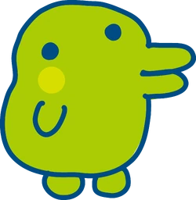
|
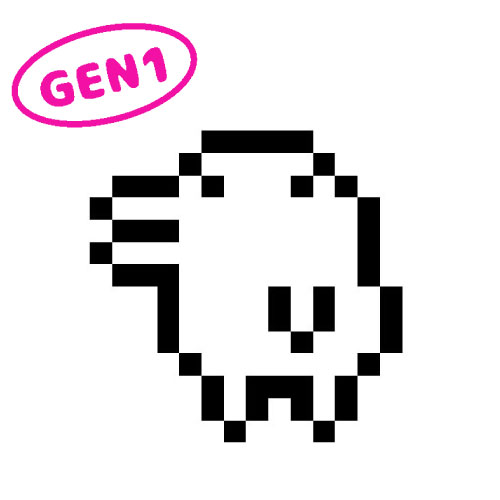 |
Amigable, glotón y relajado. |
Masculino |
Cuidado medio, con algo de comida extra. |
| Tarakotchi |
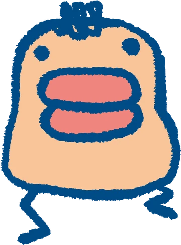 |
 |
Perezoso y bromista. Resultado de un cuidado regular. |
Se obtiene con varios descuidos o baja disciplina. |
| Gozarutchi |
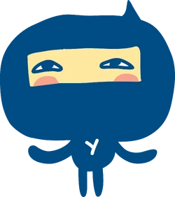 |
 |
Ninja sigiloso y reservado. |
Cuidado irregular con algo de disciplina. |
| Pochitchi |
 |
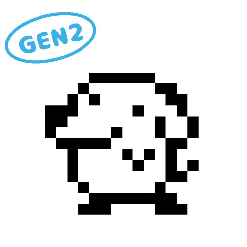 |
Parecido a un perrito blanco, leal y alegre. |
Cuidado casi perfecto, con pocas enfermedades. |
| TAMAGOTCHI CONNECTION (V1-V6, 2004 - 2009) |
| CONNECTION V1 - V6 |
Mametchi |
|
 |
Figura principal en todas las versiones. |
Masculino |
Cuidado excelente y disciplina alta. |
| Kuchipatchi |
 |
 |
Glotón, relajado y bonachón. |
Cuidado medio, alimentación frecuente. |
| CONNECTION V2 - V6 |
Memetchi |
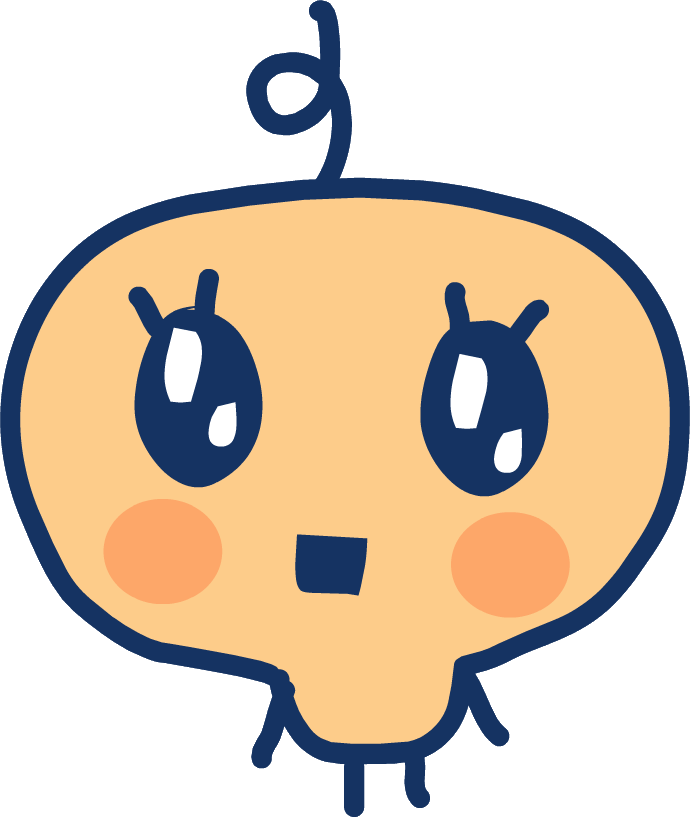 |
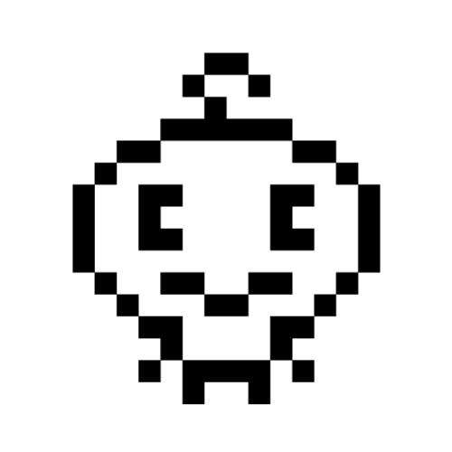 |
Con un rizo en la frente, amante de la moda. |
Femenino |
Cuidado alto con diversión constante. |
| CONNECTION V2 - V5 |
Violetchi / Furawatchi |
 |
 |
Amante de las flores y la naturaleza. |
Cuidado bueno, con afecto medio-alto. |
| CONNECTION V4 - V5 |
Makiko |
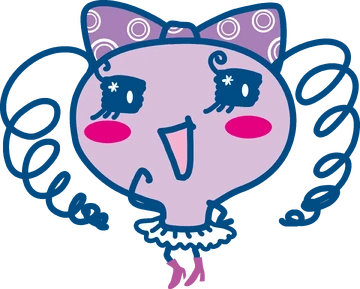 |
 |
Rival de Lovelitchi, muy presumida. |
Cuidado alto y estilo elevado. |
| CONNECTION V5 - V6 |
Chamametchi |
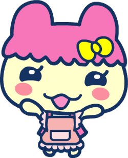
|

|
Hermana pequeña de Mametchi. |
Cuidado medio-alto, con felicidad constante. |
| CONNECTION V3 |
Sebiretchi |
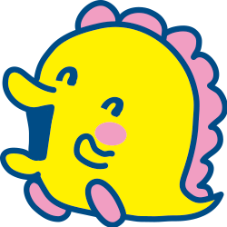
|
 |
Con forma de cebolla, calmado. |
Masculino |
Cuidado regular y equilibrio emocional. |
| CONNECTION V4 |
Yattatchi |
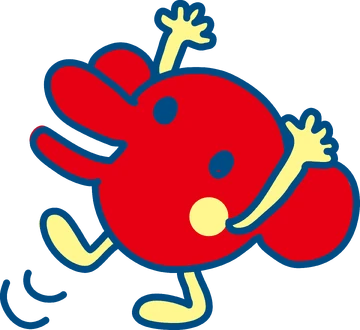 |
 |
Payaso alegre y bromista. |
Cuidado normal, buen nivel de diversión. |
| TAMAGOTCHI iD / iD L / P'S / 4U (2009 - 2014) |
| Tamagotchi iD / iD L |
Lovelitchi |
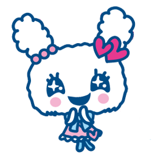
|
 |
Estrella idol de los Tamagotchi modernos. |
Femenino |
Cuidado excelente, con alta felicidad y limpieza. |
| Tamagotchi iD / iD L / P's |
Meloditchi |
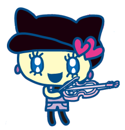
|
 |
Amiga y compañera musical de Lovelitchi. |
Cuidado excelente y vínculo alto con Lovelitchi. |
| Spacytchi |
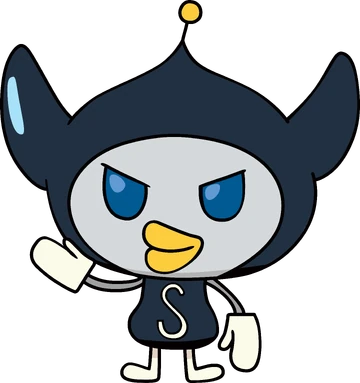 |
 |
Alien inteligente y algo travieso. |
Masculino |
Cuidado medio con momentos de juego y exploración. |
| Tamagotchi P's |
Dokidokitchi |
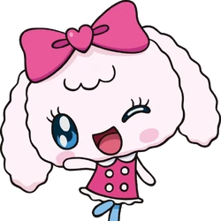
|

|
De corazón amoroso, se sonroja fácilmente. |
Femenino |
Cuidado alto, sin negligencias ni enfermedades. |
| Tamagotchi 4U |
Clulutchi |
 |
 |
Guapa y carismática, amiga de Lovelitchi. |
Cuidado muy bueno, alto nivel de diversión. |
| TAMAGOTCHI MIX / Meets / Smart / Uni (2016 - 2023) |
| Tamagotchi Mix |
Nyatchi |
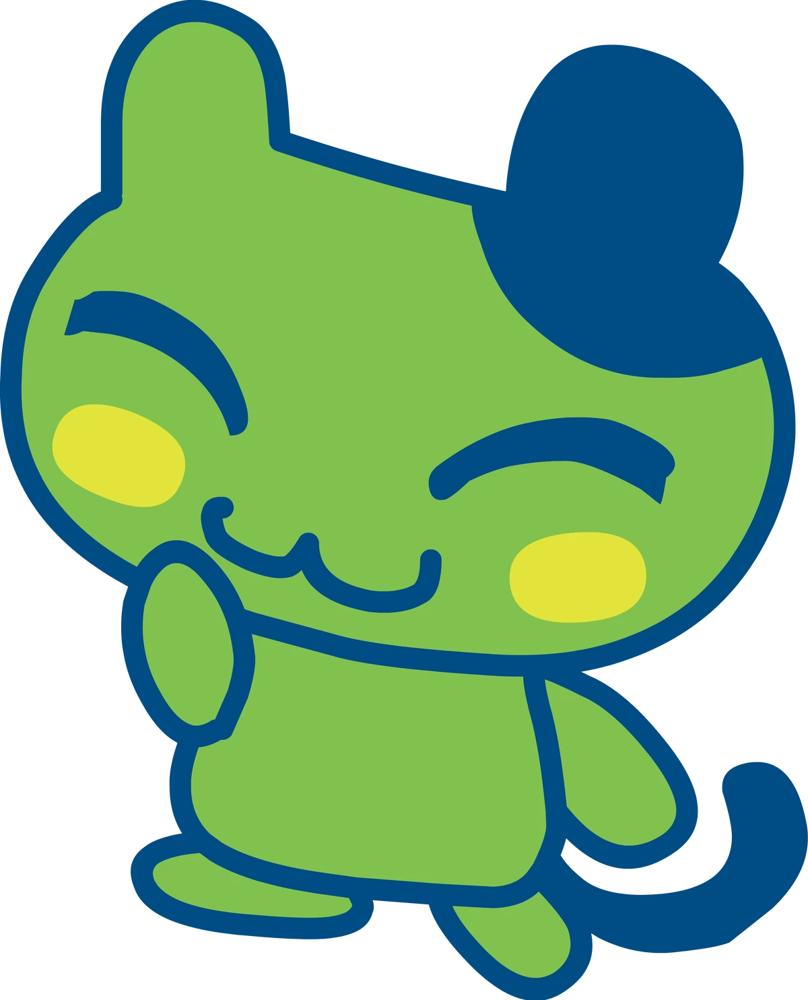 |
 |
Gatita curiosa y amistosa. |
Femenino |
Cuidado medio, con interacción frecuente. |
| Tamagotchi Mix / Meets |
Ningyotchi |
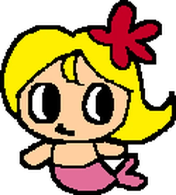
|
 |
Mitad sirena, mitad tamagotchi, amante del océano. |
Cuidado medio-alto y afecto constante. |
| Tamagotchi Meets / On |
Flowertchi |
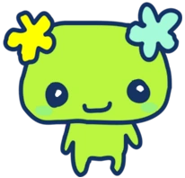
|
 |
Adora la jardinería y los ambientes tranquilos. |
Cuidado bueno, requiere juego frecuente. |
| Tamagotchi Smart |
Tamamatchi |
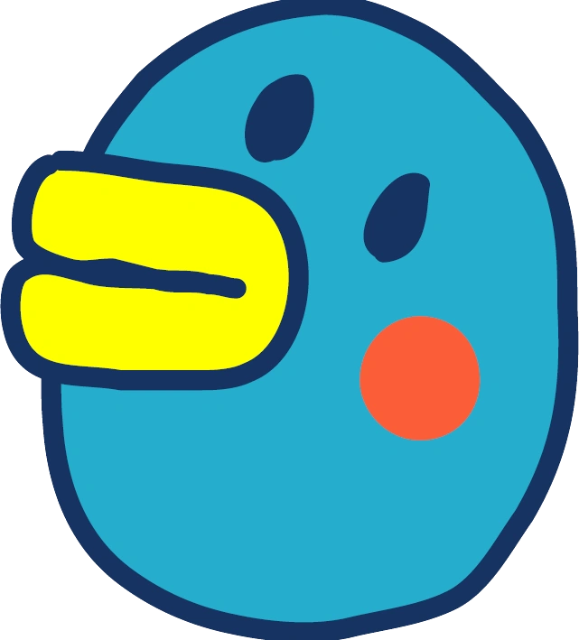
|
 |
Moderno y enérgico, le encanta ejercitarse. |
Masculino |
Cuidado alto, necesita actividad constante. |
| Wiztchi |
 |
 |
Mago inteligente y bondadoso. |
Cuidado medio, con interacciones mentales y aprendizaje. |
| Tamagotchi Uni (2023) |
UniTchi |
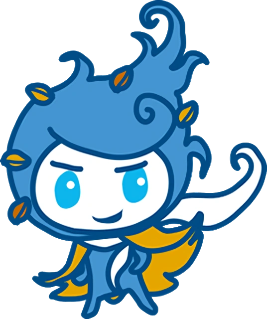 |
 |
Nuevo personaje central del Tamagotchi Uni. |
Femenino |
Cuidado excelente, conectado con la red Tamaverse. |